何も考えない、贅沢な休息時間
Brain
Retreat
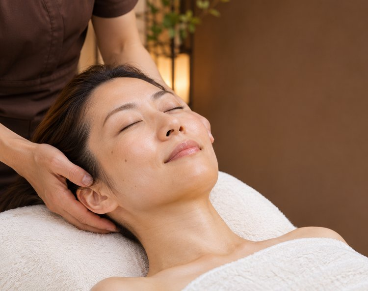
頭の疲労を回復して
睡眠の質を上げる！
質の良い睡眠取れてますか？
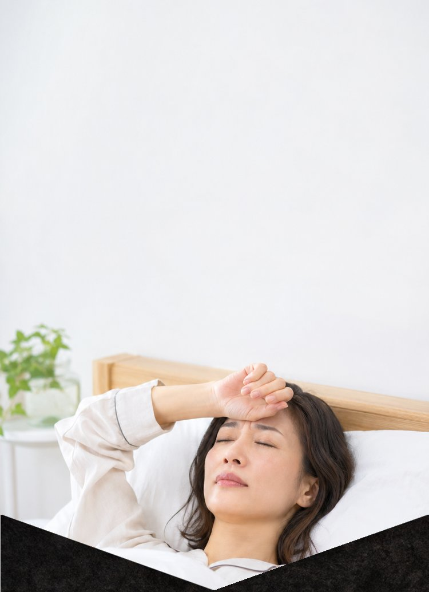
これら1個でも当てはまる人は
睡眠の質が
良くない
可能性があります
睡眠の質が悪いと
体・心が疲弊して
全体的な不調を
引き起こす原因に！
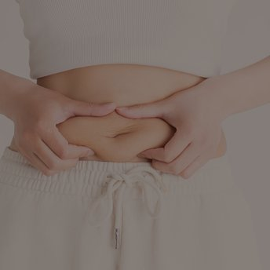
肥満
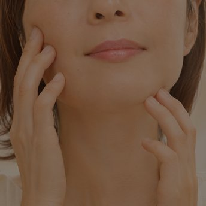
肌荒れ
睡眠の質は
とにかく重要です
ですが！
（慢性的な疲労・めまい・生理不順など）
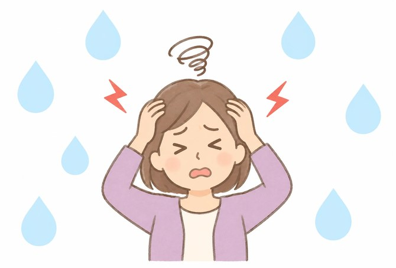
そんな方は
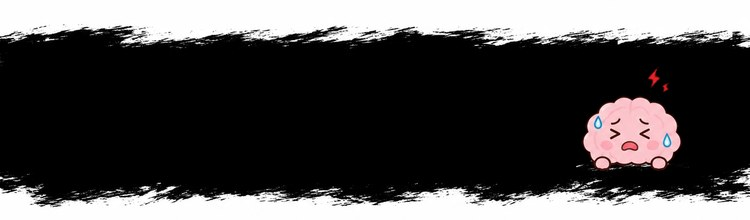
頭の脳疲労
が溜まっているかも
頭の疲労が溜まるとどんなことが起こるのか？
大脳(前頭前野)の疲労
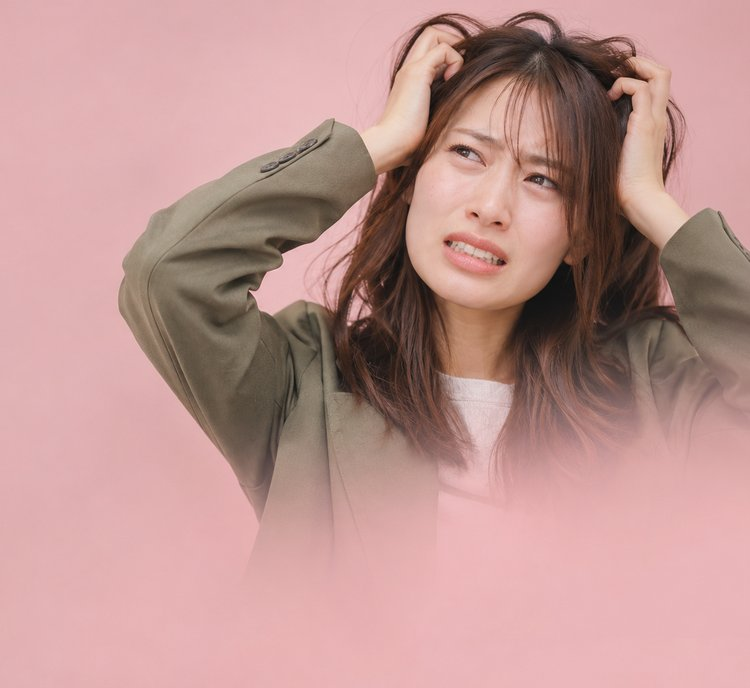
視床下部や扁桃体の疲労
脳腸相関（脳と腸のつながり）
原因1
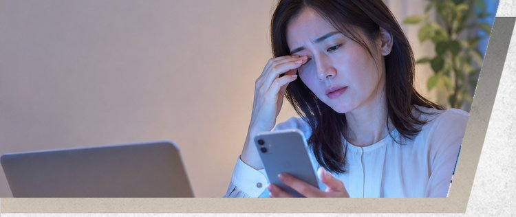
スマホ、PCなどの膨大な量の情報にさらされ、脳が使えず処理を求められ、休む暇がなくなってしまう
原因2
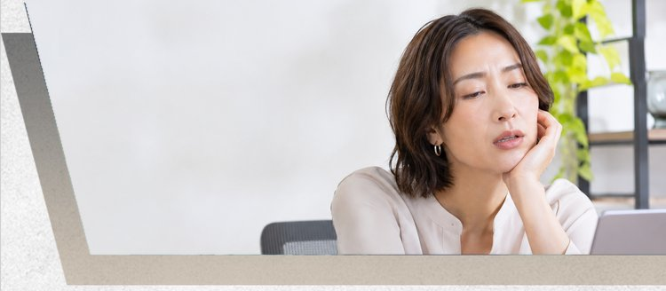
心理的ストレスで脳に負担がかかり、機能を低下させてしまいます。
原因3
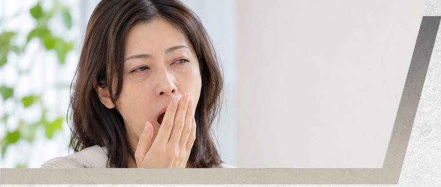
不眠は脳の老廃物がうまく排出されず、頭の疲労を促してしまいます。
他にも、様々なシーンに潜んでます
そんな頭の疲労を
放置すると
睡眠の質が悪くなり
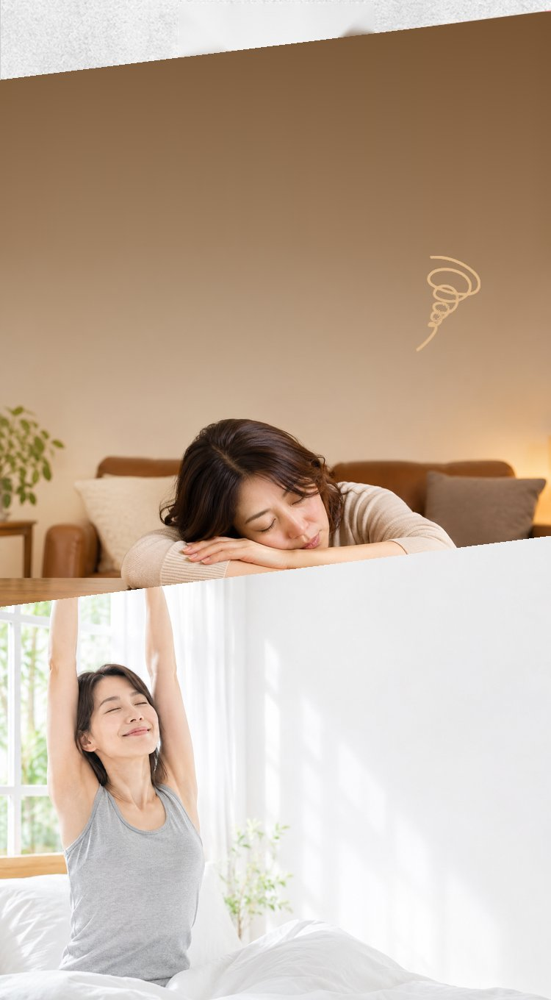
結果
心身の健康の
大敵に！
だから！
今までにない新時代の
ブレインリトリート
頭の疲労を回復して
睡眠の質を上げませんか？
現代特有の「脳の疲れ」に専門アプローチする独自技術「ブレインリトリート」。当サロンでは、お客様の現在の心身の状態やお悩みに合わせてお選びいただける2つのコースをご用意しております。
| ブレインリトリート | 睡眠整体 |
|---|---|
| 選ぶ基準 | |
| 脳疲労を専門的にケアしたい方へ | 脳疲労に加え、身体の疲れまで整えたい方 |
| こんなお悩みに | |
| ・デジタル疲れで頭が重い ・考えすぎて頭が休まらない ・寝つきが悪い、途中で目が覚める ・寝ても疲れが取れない ・自律神経の乱れが気になる |
・頭も身体も疲れが抜けない ・全身が重だるい ・身体の緊張が続いている ・心身ともに深くリラックスしたい ・より質の高い休息を求めている |
| アプローチ | |
| 脳科学に基づく独自技術で、脳疲労、腸へ専門的アプローチ | 脳疲労への専門的アプローチに加え、神経、全身調整を融合し、脳と身体と神経の総合アプローチ |
| 目指す状態 | |
| 脳を深いリラックス状態へ導き、自律神経を整え、本来の休息をサポート | 脳と身体の巡り・緊張を整え、心身ともにより深い休息とコンディショニングを目指す |
脳科学×東洋医学の融合による
画期的なアプローチ
今までにない新時代の
ブレインリトリート
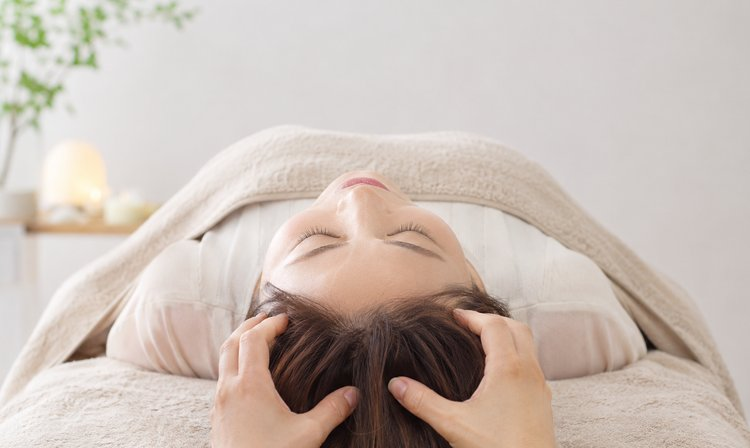
東洋医学の叡智と現代の脳科学を融合させ、脳疲労を解消し、心と体の調和を取り戻す完全オリジナルセラピーです。
体全体のめぐりを良くする
自己回復力を鍛えます！
脳科学×東洋医学の融合による
画期的なアプローチ
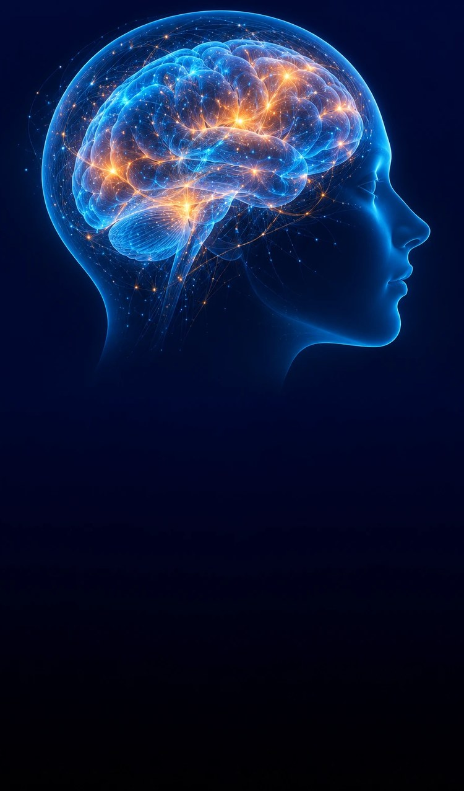
脳だけではなく、
身体も深い休息へ。
「頭も身体も疲れが抜けない」
「首や肩のこわばり、全身の重だるさが続いている」
「心身ともにリラックスしたい」
「より深い休息を求めている」
さらに、睡眠整体では
そんな脳疲労に加え、
身体の疲れも一緒に整えたい方に
おすすめなのが、
睡眠整体です。
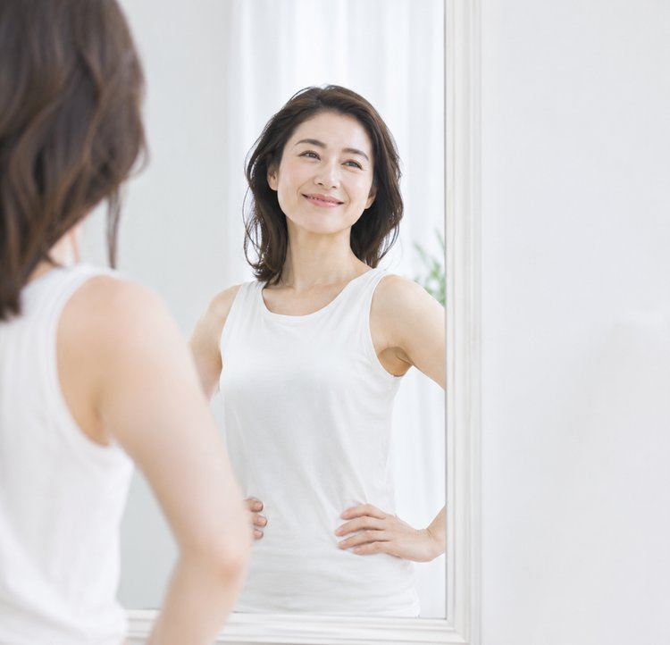
全身の巡りを整え、
緊張をやわらげることで、
心身ともにリラックスした状態へ。
日々のパフォーマンスを支える、
質の高いコンディショニングを
サポートします。
要するに
疲れにくいカラダと
脳を手に入れる
ことを
目指します！
リピート続出！
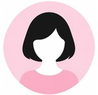
42歳女性今までは眠りが浅くて寝起きは「だるい」感じでしたが睡眠の質が改善されたようで毎朝気持ちよく起きれて気分が良いです。
今までリバウンドの繰り返しでしたが気持ちも体も落ち着いてきてダイエットも絶好調です！突然のイライラがなくなりました♪
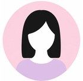
36歳女性とにかく無気力でやる気がなくて仕事も行きたくない、人間関係も煩わしかったのですが毎日が元気になって活力が湧いてきました！
施術後は寝起き特有のだるさが全然ないのに頭がスッキリしてるから本当に爽快！気持ちもリフレッシュできました。
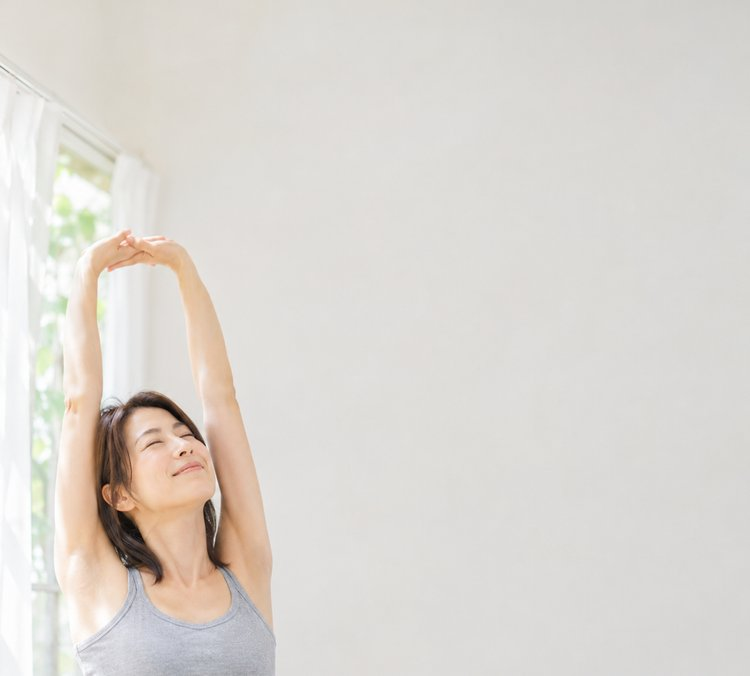
どう変化しましたか？
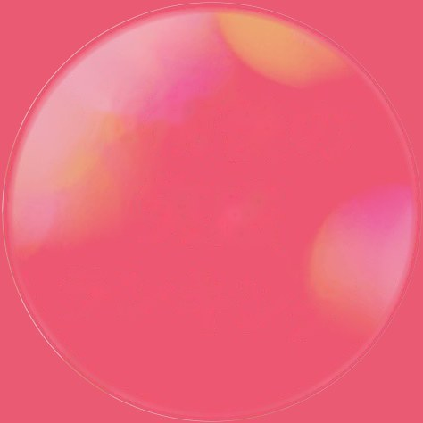
施術後の実感ランキング
ブレインリトリートで
睡眠の質が上がると
メリットが盛りだくさん！
メリット1
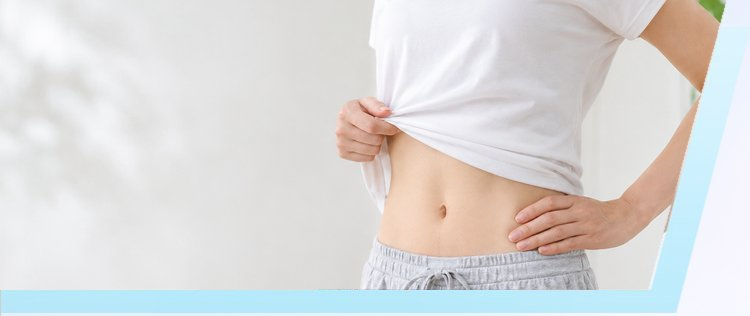
質の良い睡眠は代謝アップに期待が持てます！
メリット2
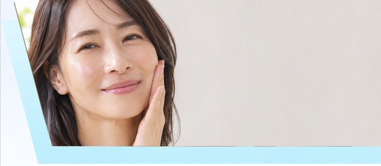
良質な睡眠でお肌の調子も◎
メリット3
生理不順、頭痛、冷えなど女性特有のお悩みにも！
メリット4
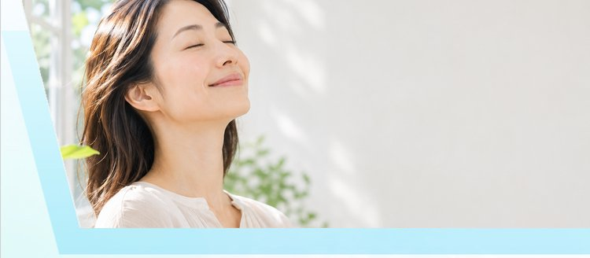
たっぷり良い睡眠を取れれば日々のモヤモヤもスッキリ！
アタマもココロもカラダも健康に！
ブレインリトリート施術の流れ
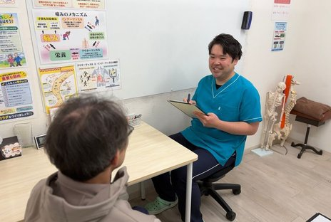
STEP.1
カウンセリング
目や頭の疲れ、首・肩のこわばり、日常生活でのお悩みなどをお伺いします。気になることは何でもご相談ください。
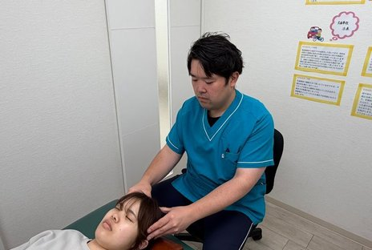
STEP.2
検査
首の動きや体幹の反らしやすさ、頭部の状態を確認します。現在のお身体の状態を把握し、施術につなげます。
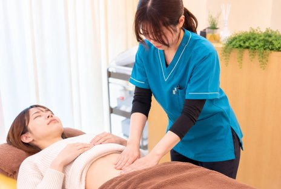
STEP.3
腸もみ
お腹の状態に合わせて、優しく丁寧にもみほぐします。心地よい刺激でお腹まわりの緊張をケアしていきます。
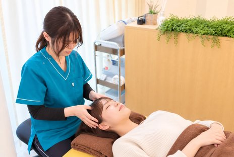
STEP.4
ドライヘッドスパ
タオル越しに電解を用いながら、手技で首・顔・耳・頭部などを丁寧にケアします。ゆったりとした時間をお過ごしください。
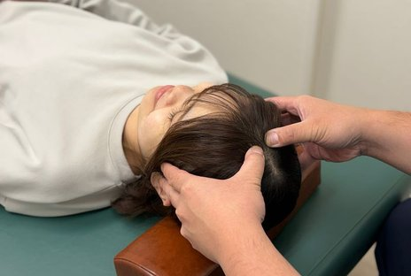
STEP.5
施術後の確認
最初に行った検査をもう一度行い、首や体幹の動き、頭部の状態などを確認します。
STEP.6
アフター
施術後のお身体の状態や確認できた変化をご説明します。今後のケアについてご相談し、必要に応じて次回のご予約をご案内します。
STEP.1
カウンセリング
寝つきや夜中の目覚め、朝起きたときの状態などをお伺いします。日頃の生活習慣や身体の疲れについても確認します。
STEP.2
検査
呼吸の深さや胸・お腹の動き、姿勢のバランス、頭部の状態を確認します。身体全体の状態を把握して施術内容を考えます。
STEP.3
マニピュレーション
手技を用いて筋肉や関節に丁寧にアプローチします。お身体の状態に合わせながら、一つひとつの動きを確認し、全身のバランスを整えていきます。
STEP.4
ドライヘッドスパ
タオル越しに電解を用いながら、首・顔・耳・頭部を丁寧にケアします。心身ともにゆったりとくつろげる時間をお過ごしください。
STEP.5
3D矯正
立体動態波を用いて、お身体の状態に合わせた施術を行います。手技とは異なるアプローチで身体のコンディションを整えていきます。
STEP.6
施術後の確認
施術前と同じ検査を行い、呼吸のしやすさや姿勢、頭部の状態などを確認します。
STEP.7
アフター
施術後のお身体の状態をお伝えし、日常生活で気をつけたいことや今後のケアをご案内します。必要に応じて次回のご予約も承ります。
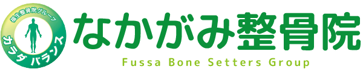
なかがみプレミアム整体院
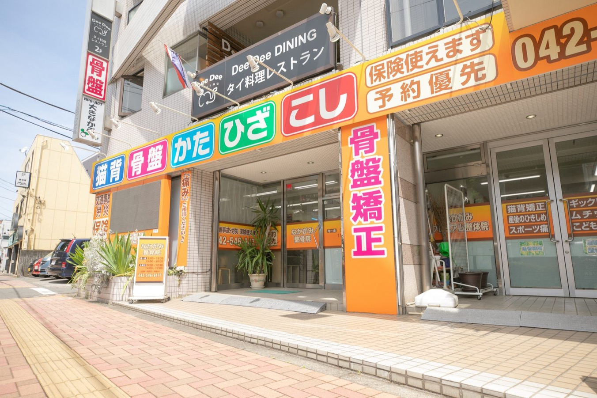
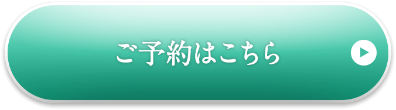
頭の疲労を回復して睡眠の質を上げる！